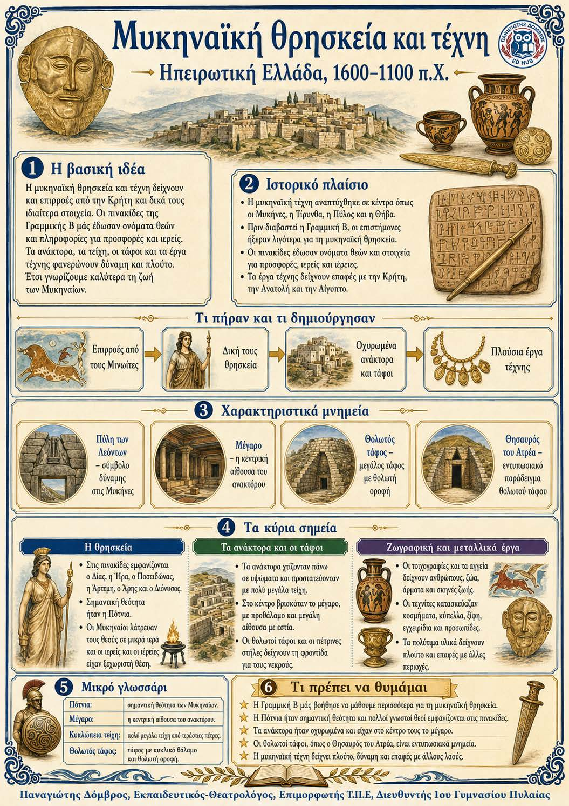

Πληροφοριογράφημα ενότητας
Το πληροφοριογράφημα αυτής της ενότητας δεν έχει ανέβει ακόμη. Οι σημειώσεις παραμένουν πλήρως διαθέσιμες.

Κεφάλαιο Β΄ · Ηπειρωτική Ελλάδα, 1600-1100 π.Χ.
Η Γραμμική Β έδειξε ότι οι Μυκηναίοι λάτρευαν πολλούς θεούς που γνωρίζουμε και από αργότερα. Η τέχνη τους επηρεάστηκε από τους Μινωίτες, αλλά απέκτησε δικά της χαρακτηριστικά. Οι οχυρωμένες ακροπόλεις, τα μεγάλα τείχη, το μέγαρο και οι θολωτοί τάφοι δείχνουν δύναμη, πλούτο και συχνές πολεμικές δραστηριότητες.
